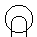
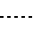
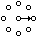
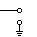

| COMPONENT | SYMBOL | ALTERNATE |
|---|
| Ammeter | |
| And Gate | |
| Antenna, Balanced | |
| Antenna, General | | ![[Schematic Symbol]](circuit_symbols_files/cs_antenna_general2.gif) |
| Antenna, Loop, Shielded | |
| Antenna, Loop, Unshielded | |
| Antenna, Unbalanced | ![[Schematic Symbol]](circuit_symbols_files/cs_antenna_unbalanced1.gif) | |
| Attenuator, Fixed | |
| Attenuator, Variable | |
| Battery | ![[Schematic Symbol]](circuit_symbols_files/cs_battery.gif) |
| Capacitor, Feedthrough | |
| Capacitor, Fixed, Nonpolarized | |
| Capacitor, Fixed, Polarized | |
| Capacitor, Ganged, Variable | |
| Capacitor, General | |
| Capacitor, Variable, Single | |
| Capacitor, Variable, Split-Stator | |
| Cathode, Cold | |
| Cathode, Directly Heated | ![[Schematic Symbol]](circuit_symbols_files/cs_cathode_directly_heated.gif) |
| Cathode, Indirectly Heated | | |
| Cavity Resonator | |
| Cell | |
| Circuit Breaker | |
| Coaxial Cable | | ![[Schematic Symbol]](circuit_symbols_files/cs_coaxial_cable2.gif) |
| Crystal, Piezoelectric | |
| Delay Line | | |
| Diode, General | |
| Diode, Gunn | |
| Diode, Light-Emitting | |
| Diode, Photosensitive | |
| Diode, Photovoltaic | ![[Schematic Symbol]](circuit_symbols_files/cs_diode_photovoltaic.gif) |
| Diode, Pin | |
| Diode, Varactor | |
| Diode, Zener | |
| Directional Coupler | | |
| Exclusive-Or Gate | |
| Female Contact, General | |
| Ferrite Bead | | |
| Fuse | | ![[Schematic Symbol]](circuit_symbols_files/cs_fuse2.gif) |
| Galvanometer | | |
| Ground, Chassis | ![[Schematic Symbol]](circuit_symbols_files/cs_ground_chassis1.gif) | |
| Ground, Earth | |
| Handset | ![[Schematic Symbol]](circuit_symbols_files/cs_handset.gif) |
| Headphone, Double | |
| Headphone, Single | |
| Inductor, Air-Core | |
| Inductor, Bifilar | |
| Inductor, Iron-Core | |
| Inductor, Tapped | |
| Inductor, Variable | | |
| Integrated Circuit | |
| Inverter | |
| Jack, Coaxial | ![[Schematic Symbol]](circuit_symbols_files/cs_jack_coaxial.gif) |
| Jack, Phone, 2-Conductor | |
| Jack, Phone, 2-Conductor Interrupting | |
| Jack, Phone, 3-Conductor | |
| Jack, Phono | |
| Key, Telegraph | |
| Lamp, Incandescent |  |
| Lamp, Neon | |
| Male Contact, General | |
| Microphone | |
| Nand Gate | |
| Negative Voltage Connection | |
| Nor Gate | ![[Schematic Symbol]](circuit_symbols_files/cs_nor_gate.gif) |
| Operational Amplifier | |
| Or Gate | |
| Outlet, Utility, 117-V | |
| Outlet, Utility, 234-V | |
| Photocell, Tube | |
| Plug, Phone, 2-Conductor | |
| Plug, Phone, 3-Conductor | |
| Plug, Phono | |
| Plug, Utility, 117-V | |
| Plug, Utility, 234-V | |
| Positive Voltage Connection | |
| Potentiometer | ![[Schematic Symbol]](circuit_symbols_files/cs_potentiometer1.gif) | |
| Probe, Radio-Frequency | |
| Rectifier, Semiconductor | ![[Schematic Symbol]](circuit_symbols_files/cs_rectifier_semiconductor.gif) |
| Rectifier, Silicon-Controlled | |
| Rectifier, Tube-Type | |
| Relay, DPDT | |
| Relay, DPST | |
| Relay, SPDT | |
| Relay, SPST | |
| Resistor | |
| Resonator | ![[Schematic Symbol]](circuit_symbols_files/cs_resonator.gif) |
| Rheostat | | |
| Saturable Reactor | |
| Shielding |  |
| Signal Generator | |
| Speaker | | |
| Switch, DPDT | |
| Switch, DPST | |
| Switch, Momentary-Contact | |
| Switch, Rotary |  |
| Switch, SPDT | |
| Switch, SPST | |
| Terminals, General, Balanced | |
| Terminals, General, Unbalanced |  |
| Test Point | |
| Thermocouple | | |
| Thyristor | |
| Transformer, Air-Core | |
| Transformer, Iron-Core | |
| Transformer, Tapped Primary | |
| Transformer, Tapped Secondary | |
| Transistor, Bipolar, npn | |
| Transistor, Bipolar, pnp | |
| Transistor, Field-Effect, N-Channel | |
| Transistor, Field-Effect, P-Channel | |
| Transistor, Metal-Oxide, Dual-Gate | |
| Transistor, Metal-Oxide, Single-Gate | |
| Transistor, Photosensitive | |
| Transistor, Unijunction | |
| Tube, Diode | |
| Tube, Pentode | |
| Tube, Photomultiplier | |
| Tube, Tetrode | |
| Tube, Triode | |
| Unspecified Component | |
| Voltmeter | |
| Wattmeter | | |
| Wires | |
| Wires, Connected, Crossing | | |
| Wires, Not Connected, Crossing | ![[Schematic Symbol]](circuit_symbols_files/cs_wires_not_connected_crossing1.gif) | |